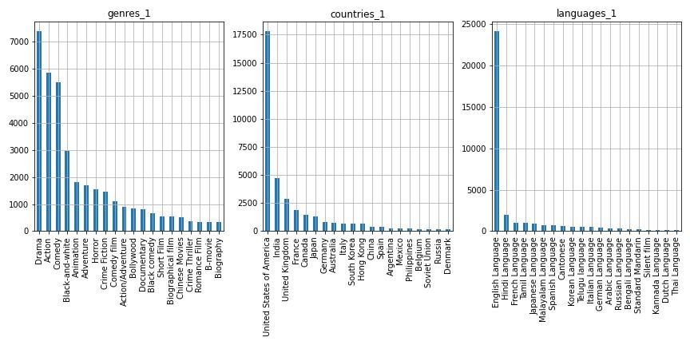

Understanding critical movie success using data-driven analysis.
Presented by: Adlucere 2022
Come forth red carpet of analytical results...
In the current age of easy access to humanity's greatest cinematic achievements when we like and how we like, we often wish to seek out the best of the best when looking for a way to spend an afternoon. But what really makes a movie a critical success? Is it an artistic X factor, the result of a director, the cast and the crew pouring their heart and soul into a project, or are there measurable factors that influence if we see a film as "high quality"? Is there a recipe for a critical darling? In this project we attempt to gain a deeper understanding of what makes a movie a critical success using a data-driven approach. Our analysis takes into account several factors and takes advantage of the large amounts of lexical data provided in the data set using feature extraction.